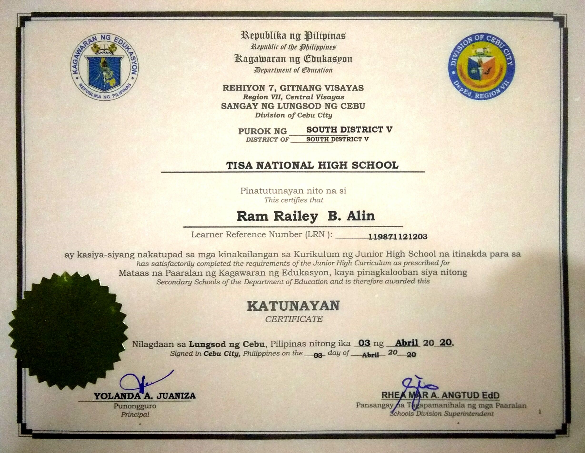
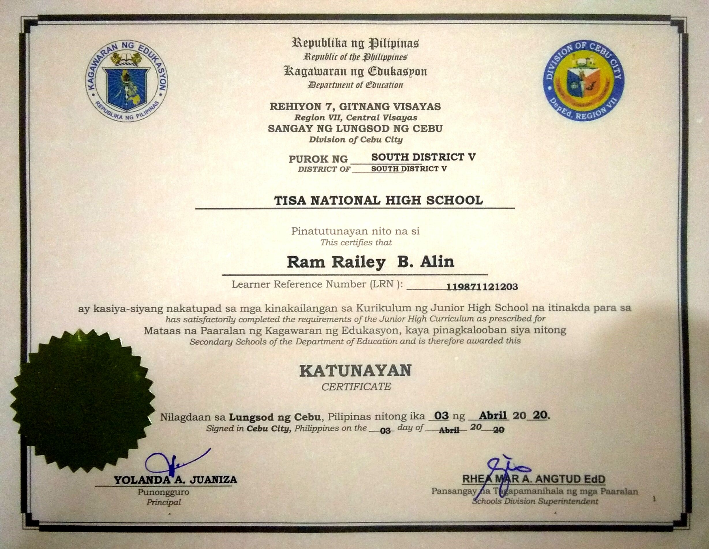

My Certifications
Certifications are designated credentials earned by an individual to verify their legitimacy and competence to perform a job. Your certification is typically displayed as a document stating that as a professional, you've been trained, educated and are prepared to meet a specific set of criteria for your role. This statement is awarded only after you've passed the proper assessments administered by a recognized third-party credentialing institution.
 
